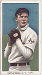
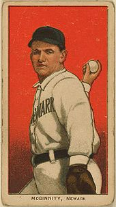
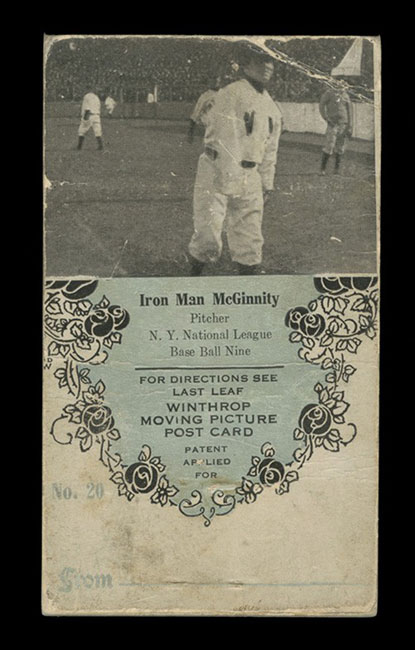
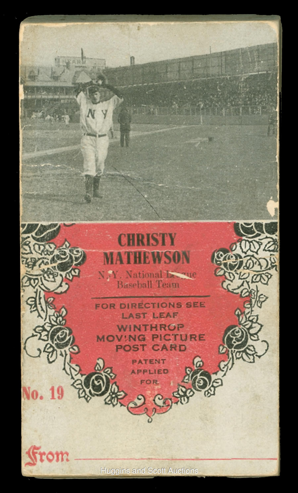
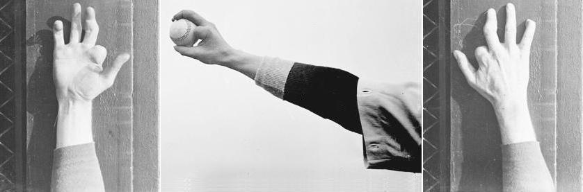
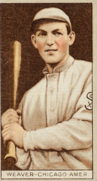
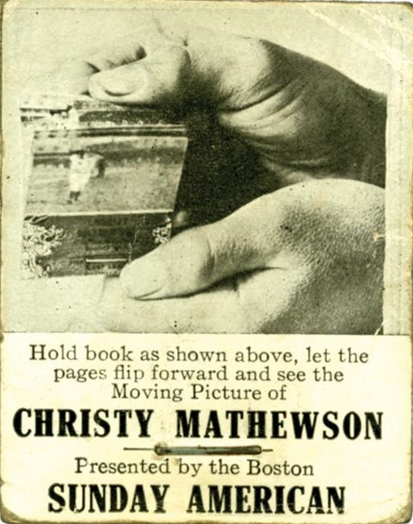
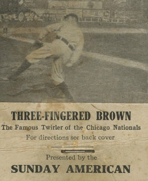

Three-Fingered Brown, Winthrop flipbook footage of 1906-1907

Christy Mathewson

Joe McGinnity
The Winthrop Moving Picture Postcard Company seems basically to have been a postcard and stationery company based in Winthrop,
Washington. Around 1907 they would seem to have produced a series of flipbooks that were registered with the Library of Congress
as films in that year. Apart from filming the vaudeville acts of Stone and Montgomery and the clown
was the star pitcher for the New York Giants. Known amongst other things as "The Christian Gentleman" (he never pitched on Sundays),
Mathewson had led the Giants to victory in the 1905 World Series by pitching three shutouts, but had a poor year in 1906 due to
illness (diphtheria). In 1907 he regained his form and enjoyed a period of superlative success from 1908 to 1913, after which his
performance declined. In 1916 he retired to work as manager (Cincinnati Reds) and coach (Giants) until 1921. He died of tuberculosis
in 1925.The first clip below includes other (later) footage of Mathewson.
Christy Mathewson and the New York National League Team (Winthrop, 1906-1907)
Amongst other baseball-related products produced by winthrop in the year was a flipbook featuring Joseph Jerome McGinnity dit
Joe McGinnity (1871-1929), known, since he was a foundry worker, as "THe Iron Man" who also pitched for the Giants. McGinnity,
famous at this time for pitching in "doubleheaders" (two games in the same day), he had a long career, retiring in 1925 to become
a coach. The Mathewson "film" was also issued as a flipbook.


Iron Man McGinnity> and Christy Mathewson Winthrop flipbooks, 1907

The right hand of Mordecai Brown

Mordecai Brown
They also produced footage of another famous pitcher, Mordecai Peter Centennial Brown dit "Three-Fingered" Brown (1876-1948),
probably also designed for a flipbook. His lack of two fingers, the result of a farm-machinery accident, turned to his advanatage
since it led to the production of an exceptional "curveball". Between 1904 and 1912 he played for the Chicago Cubs. He retired in
1916 and subsequently ran a filling station in Terre Haute in his native Indiana.
"Three-Fingered" Brown (Winthrop, 1907)
In fact the 1907 "film" of Mathewson, like the footage of Mcginnity and Brown, are most probably all part of the same set of
flipbooks (seemingly at least twenty of them) and may well be the same as those issued with The Boston American in 1906.


flipbook presentations of Christy Mathewson and Mordecai Brown, 1906